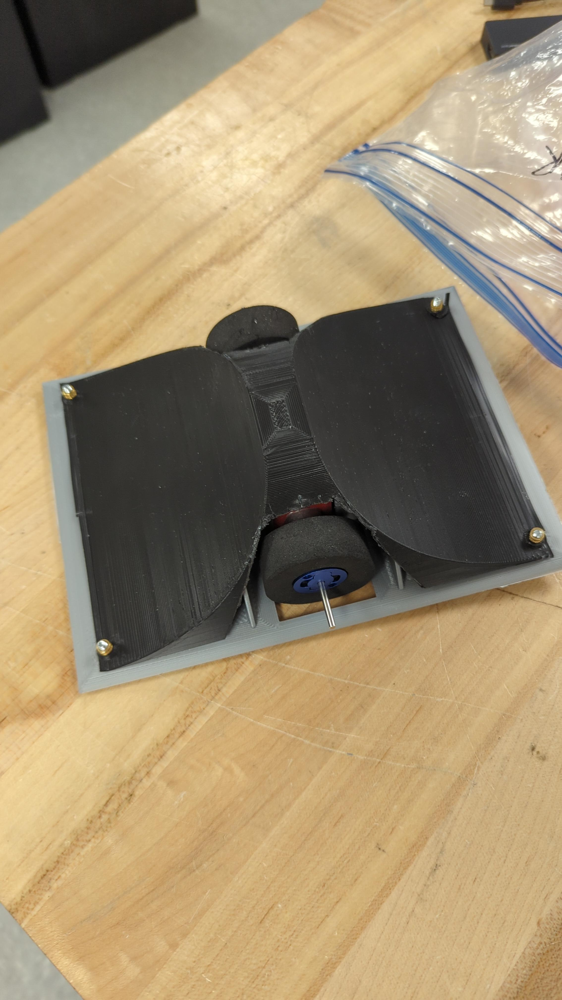
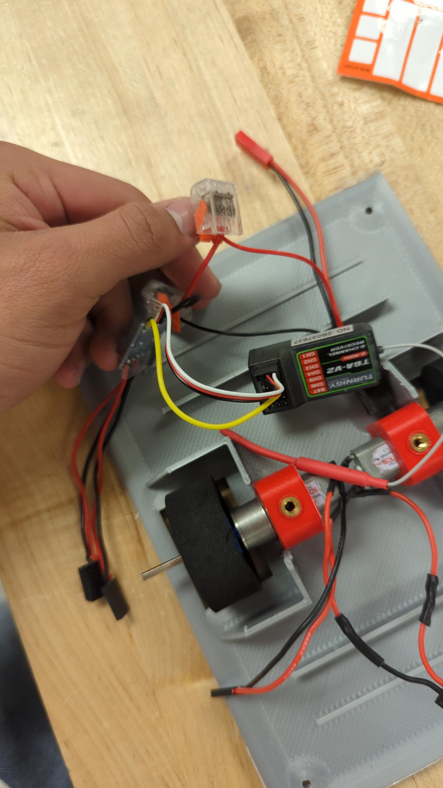
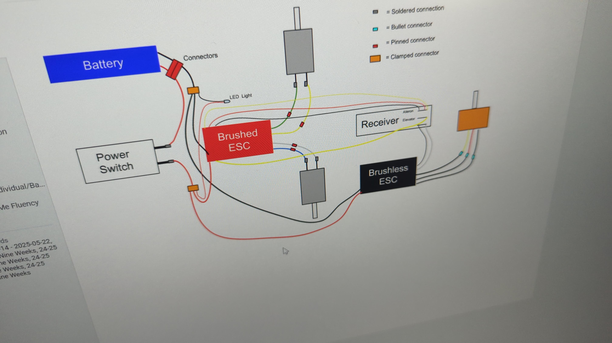

CAD • Simulation • Internal Combustion Engines
C++ • Cryptography • Linux • Security
Additive Manufacturing • Fluid Systems • Automotive Engineering
CFD • Numerical Methods • Geometry Processing • Performance Estimation
def slice_grid(mesh, x, N):
ymin, zmin = mesh.bounds[0][1:]
ymax, zmax = mesh.bounds[1][1:]
ys = np.linspace(ymin, ymax, N)
zs = np.linspace(zmin, zmax, N)
x0 = mesh.bounds[0][0] - 0.5
origins = np.array([[x0, y, z] for y in ys for z in zs])
dirs = np.tile([1, 0, 0], (len(origins), 1))
hits = mesh.ray.intersects_any(origins, dirs)
return hits.reshape(N, N).astype(float)
Engine Modeling • Thermodynamics • Performance Simulation
📄 Simulation Overview Document not Currently Available (PDF)
Electronics • CAD • Fabrication • Mechatronics


